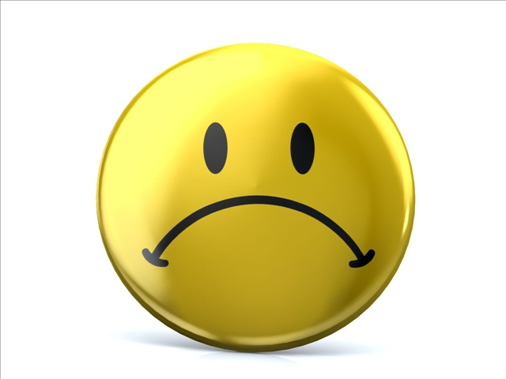

Google tells us that a joke is "a thing someone says to cause amusment or laughter". Jokes have been around forever and as such come in many different forms such as knock-knock jokes and puns which are what this webpage will cover.
Jokes are a form of entertainment that is free, they come straight from the brain and can be used at any time for entertainement. So when you’re out bored camping with no wifi or games it would be awesome if you could tell jokes.
When you cause someone else to laugh you inturn feel good, not just because laughing is contagious but because of that feeling of accomplishment, and who doesn’t want to feel good!
Being able to tell jokes helps you make friends since people are attracted to positive energy and want to feel happy, it is always considered a good skill to have and can stop people from feeling bad.
Besides puns, jokes always have a setup and a punchline. In the most simplistic form this can be seen in a knock knock joke, after the audience responds with who’s there you lay a setup and after they repeat what you said you lay the punchline (unless what they repeated was the punchline). In all jokes there is that moment of realization after the audience realizes you made them say boo hoo in a knock-knock joke they react and this realization causes laughter.
After realizing the immense amount of topics people joke about you may feel it is okay to joke about everything which it’s not. Some categories you joke about could land you in some trouble either being thought as bullying, hate speech or bigotry. To help prevent these sitauions from occurring ask yourself if there is a reason anyone would be deeply offend by your joke so you know you are being funny and not a dummy.
The line is a figurative border that seperates what people find okay to joke about and what is not.
Stuff that doesn't significantly offend most, relatable inconvienciences, personal dilemas, something fiction, etc.
Tradegies, global problems such as hunger, making fun of the disabled, etc.
The line exist to represent what people have hard times finding funny, since its harder to laugh when you are feeling sad. For example joking about war and the deathtoll might not be the best idea since someone could have had a bad experience with war and your joke might be seen as incensitive and distastful.
